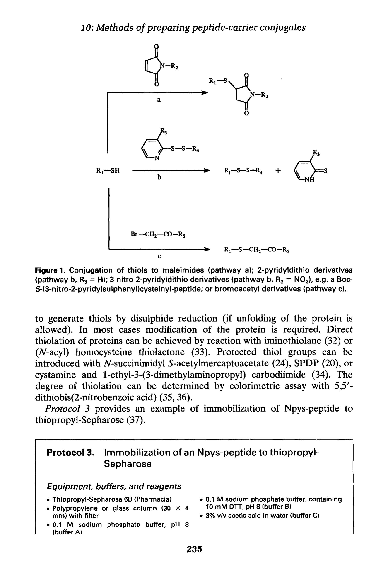
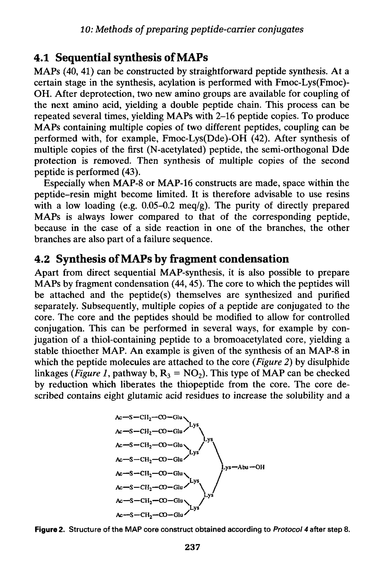

第十章 肽-载体偶联物制备方法
Methods of Preparing Peptide-Carrier Conjugates
作者：J. W. Drijfhout & P. Hoogerhout
━━━━━━━━━━━━━━━━━━━━━━━━━━━━━━━━━━━━━━━━
在免疫学研究中，小肽（通常<20个残基）自身往往无法引起足够的免疫反应——它们分子量太小、缺乏T细胞表位（T-cell epitopes）、在体内快速清除，因此免疫原性（immunogenicity）很弱。为了产生针对特定肽序列的抗体，需要将肽（hapten，半抗原）偶联（conjugate）到载体蛋白（carrier protein）上，形成肽-载体偶联物（peptide-carrier conjugate）。
常用的载体蛋白包括：
| 载体蛋白 | 缩写 | 特点 |
|---|---|---|
| Keyhole Limpet Hemocyanin | KLH | 巨大分子（~4.5×10^5-1.3×10^7 Da），免疫原性最强，最常用 |
| Bovine Serum Albumin | BSA | 分子量~67 kDa，溶解性好，价格低廉 |
| Tetanus Toxoid | TT | 破伤风类毒素，提供强T细胞辅助 |
| Diphtheria Toxoid | DT | 白喉类毒素，类似TT |
| Ovalbumin | OVA | 鸡卵白蛋白，~45 kDa，常用于实验研究 |
选择载体蛋白的考虑因素：分子量大小（大分子更佳）、溶解性、可用氨基/巯基数量、与肽序列的兼容性，以及是否与实验体系存在交叉反应（cross-reactivity）。
戊二醛（glutaraldehyde, GA）是最经典的同型双功能交联剂，两端各有一个醛基，可以分别与载体蛋白和肽上的氨基（Lys ε-氨基或N端α-氨基）形成Schiff碱（Schiff base）。
反应机制：
醛基 + 蛋白-NH2 → Schiff碱（-CH=N-）→ 还原（NaBH4或NaCNBH3）→ 稳定二级胺键；
理论上戊二醛两端分别连接载体和肽，但实际上两端功能基相同，极易产生载体-载体自身交联和肽-肽聚合。
戊二醛法的缺点：
无法控制连接方向：两端都是醛基，载体蛋白之间也会交联形成大聚集体；
容易导致载体蛋白变性和沉淀；
Schiff碱不还原则不稳定（可逆），还原后可能改变蛋白构象；
偶联位点随机（任何Lys残基都可能参与），产物不均一。
所有同型双功能交联剂（包括戊二醛、DSS、BS3等）都有一个根本性缺陷：两个反应端基相同，无法区分载体蛋白和肽。这导致：
载体蛋白-载体蛋白自身交联（self-conjugation），形成高分子量聚集体；
肽-肽聚合，降低有效偶联效率；
产物组成不均一，难以表征和重复；
因此，本章明确建议：不推荐使用同型双功能试剂制备肽-载体偶联物。
异型双功能交联剂是制备肽-载体偶联物的首选。其两端具有不同的反应基团：一端与载体蛋白反应，另一端与肽反应，从而实现定向偶联（directional conjugation），避免了自身交联问题。
SPDP（N-succinimidyl 3-(2-pyridyldithio)propionate）是最经典的异型双功能交联剂之一。其工作原理：
Step 1: SPDP的NHS酯端与载体蛋白上的Lys ε-氨基反应，引入2-吡啶基二硫基（pyridyl disulfide）；
Step 2: 肽C端或侧链的游离巯基（Cys-SH）与载体上的吡啶基二硫基发生交换反应，形成稳定的二硫键（disulfide bond）；
释放出的2-硫吡啶酮（pyridone）在343nm有特征吸收，可用于定量监测偶联程度。
SPDP法的优势：
两步反应，分别修饰载体和肽，避免交叉反应；
二硫键稳定但在还原条件下可逆，有时可用于可裂解偶联物；
通过343nm吸光度可方便地监控反应进程。
SPDP法的局限：
需要在肽序列中引入Cys残基（如果没有天然的Cys）；
二硫键在体内可被还原，不适合需要长期稳定的偶联物；
Cys的巯基需要保持还原态，氧化条件下会形成二聚体。
MBS（m-maleimidobenzoyl-N-hydroxysuccinimide ester）是另一种重要的异型双功能交联剂。其一端为NHS酯（与氨基反应），另一端为马来酰亚胺（maleimide，与巯基反应）。

Figure 1. (a) 巯基-马来酰亚胺偶联机制 (b) 2-吡啶基二硫键偶联机制
MBS法的工作流程：
Step 1: MBS的NHS酯端与载体蛋白的Lys ε-氨基反应，将maleimide基团引入载体；
Step 2: 含有游离Cys-SH的肽与载体上的maleimide反应，形成稳定的硫醚键（thioether bond）；
硫醚键不可逆，比二硫键更稳定，适合体内实验。
MBS法的优势：
形成稳定的硫醚键，不可逆，适合体内长期实验；
Maleimide与巯基的反应具有高度选择性，在pH 6.5-7.5条件下几乎不与氨基反应；
产物均一，表征容易。
MBS本身是疏水的，需要先溶于有机溶剂（DMF或DMSO）再加入水相。磺基-MBS（sulfo-MBS）在MBS分子上引入了磺酸基团，使其具有良好的水溶性，可以直接溶于水相缓冲液。
优势：避免了有机溶剂对蛋白的潜在变性作用；
适合对有机溶剂敏感的载体蛋白；
操作更简便，减少了操作步骤。
此法与SPDP法的化学原理类似，但使用不同的试剂实现。载体蛋白先用2-吡啶基二硫试剂修饰，引入活性二硫键，然后与含Cys的肽反应形成二硫键连接。
与MBS法的硫醚键相比，二硫键的主要区别：
| 特征 | 二硫键（Disulfide） | 硫醚键（Thioether, MBS法） |
|---|---|---|
| 稳定性 | 还原条件下可裂解 | 不可逆，高度稳定 |
| 体内应用 | 可被还原酶裂解 | 持久存在 |
| 监测方式 | 343nm吡啶酮释放 | 需SDS-PAGE或质谱 |
| 适用场景 | 需要可裂解连接时 | 需要稳定持久连接时 |
溴乙酰化法（bromoacetylation）是另一种将肽连接到载体上的策略：
Step 1: 用溴乙酸NHS酯（bromoacetic acid NHS ester, BrAc-NHS）修饰载体蛋白的氨基，引入溴乙酰基（bromoacetyl group）；
Step 2: 含游离Cys-SH的肽与溴乙酰基反应，形成稳定的硫醚键；
反应在弱碱性条件（pH 7.5-8.5）下进行。
溴乙酰化法的优势：试剂简单、价格低廉；局限：溴乙酰基在高温或强碱条件下可能与组氨酸（His）的咪唑基或赖氨酸（Lys）的氨基发生副反应。
| 方法 | 连接键类型 | 稳定性 | 需要Cys | 特点 |
|---|---|---|---|---|
| SPDP | 二硫键 | 可裂解 | 是 | 343nm可监测；体内可被还原 |
| MBS | 硫醚键 | 不可逆 | 是 | 稳定持久；需有机溶剂助溶 |
| Sulfo-MBS | 硫醚键 | 不可逆 | 是 | 水溶性改进的MBS |
| 2-吡啶基二硫 | 二硫键 | 可裂解 | 是 | 类似SPDP原理 |
| BrAc-NHS | 硫醚键 | 不可逆 | 是 | 试剂简单便宜；可能有副反应 |
MAP（Multiple Antigenic Peptide，多抗原肽）是一种创新策略，由Tam提出。它不需要载体蛋白，而是使用赖氨酸（Lysine）树枝状核心（dendritic core）作为支架，将多个相同或不同的肽链连接在核心上，形成树枝状大分子。

Figure 2. MAP核心结构示意图——赖氨酸树枝状骨架
MAP的构建直接在SPPS树脂上完成，核心是利用赖氨酸的α-氨基和ε-氨基分别延伸两条肽链：
第1层（1st generation）：1个Lys核心 → 2个分支（2-mer MAP）；
第2层（2nd generation）：在上述2个分支各加1个Lys → 4个分支（4-mer MAP）；
第3层（3rd generation）：在4个分支各加1个Lys → 8个分支（8-mer MAP）；
最常用的是4-mer和8-mer MAP，分子量通常达到10-20 kDa，足以引起免疫反应。
无需载体蛋白：避免了载体引起的交叉反应；
直接在SPPS中构建：与肽合成同步完成，无需额外偶联步骤；
高免疫原性：多个肽臂呈递给免疫系统，产生强免疫刺激（多价效应）；
分子量可控：通过调整树枝状核心的代数控制MAP分子量；
产物相对均一：与载体偶联物相比，MAP的组成更加明确。
合成难度：8-mer MAP需要同时合成8条肽链，对偶联效率要求极高；
解决：可以使用"部分肽段+连接子"策略，先合成较短的肽段，再通过片段缩合连接到MAP核心；
溶解性：高分子量MAP可能溶解性差；
纯化困难：MAP产物用常规RP-HPLC纯化可能效果不佳；
空间位阻：分支过多可能导致核心附近的肽链不完全合成。
偶联完成后，需要评估偶联效率（conjugation efficiency）：
Trp荧光法：如果肽中含有Trp残基，偶联后载体蛋白的Trp荧光光谱会发生变化（波长位移或强度变化），可用于定量评估偶联程度；
SDS-PAGE：偶联后载体蛋白的表观分子量增大，在SDS-PAGE上出现带位移（band shift）；
MALDI-TOF MS：直接测定偶联前后的分子量变化，计算连接的肽分子数；
氨基酸分析（AAA）：酸水解后分析氨基酸组成变化；
Ellman试验：定量检测游离巯基的消失程度，间接评估偶联效率。
肽与载体的摩尔比（peptide-to-carrier ratio）对免疫效果至关重要：
| 比例 | 效果 | 适用场景 |
|---|---|---|
| 低（~5:1） | 免疫刺激弱 | 载体免疫耐受实验 |
| 中（~10-20:1） | 最佳范围 | 常规免疫 |
| 高（>30:1） | 可能抑制免疫反应 | 特殊需求 |
一般推荐的肽/载体摩尔比为10-20:1。过高的比例可能导致"免疫沉默"（immunological silencing）或载体表位掩蔽。
初次免疫（primary immunization）：使用弗氏完全佐剂（Complete Freund's Adjuvant, CFA）乳化偶联物；
加强免疫（booster immunization）：间隔2-3周，使用弗氏不完全佐剂（Incomplete Freund's Adjuvant, IFA）；
免疫途径：皮下（subcutaneous）或腹腔（intraperitoneal）注射；
免疫次数：通常需要3-4次免疫才能获得高滴度抗体；
采血检测：每次免疫后7-10天采血，用ELISA检测血清抗体滴度。
在肽序列中添加Cys残基（通常在N端或C端），用于与交联剂巯基反应；
Cys应添加在远离预期表位的位置，避免干扰抗体识别；
如果目标蛋白已有天然Cys且位于关键区域，需要考虑是否使用替代交联策略；
肽长度一般8-15个残基足以模拟B细胞表位（B-cell epitope）；
如需T细胞辅助，可选择已知T细胞表位肽段共同偶联。
| ▸ 小肽免疫原性弱，需偶联到载体蛋白（KLH、BSA、TT、DT等）上才能引起有效免疫反应。 ▸ 不推荐使用同型双功能交联剂（如戊二醛）：无法控制连接方向，导致自身交联和产物不均一。 ▸ 异型双功能交联剂是首选：SPDP（二硫键）、MBS（硫醚键）、溴乙酰化法等。 ▸ MBS法形成稳定硫醚键，适合体内实验；SPDP法形成可裂解二硫键，可通过343nm监测。 ▸ 所有异型双功能方法通常需要在肽序列中引入Cys残基作为连接位点。 ▸ MAP策略无需载体蛋白：用Lys树枝状核心直接在SPPS中构建多价肽。 ▸ 偶联效率检测：Trp荧光、SDS-PAGE、MALDI-TOF MS、Ellman试验。 ▸ 推荐肽/载体摩尔比10-20:1，过高可能导致免疫沉默。 |
|---|